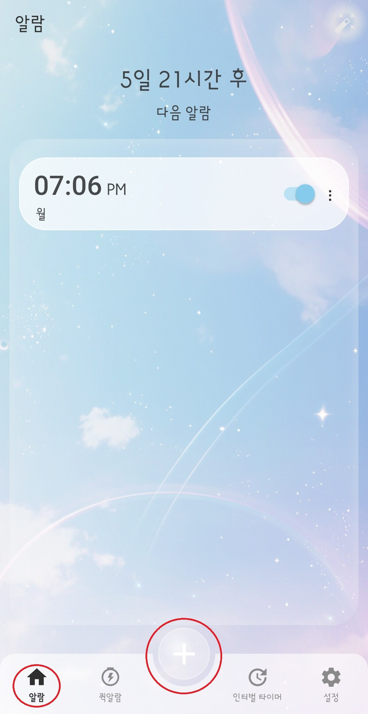
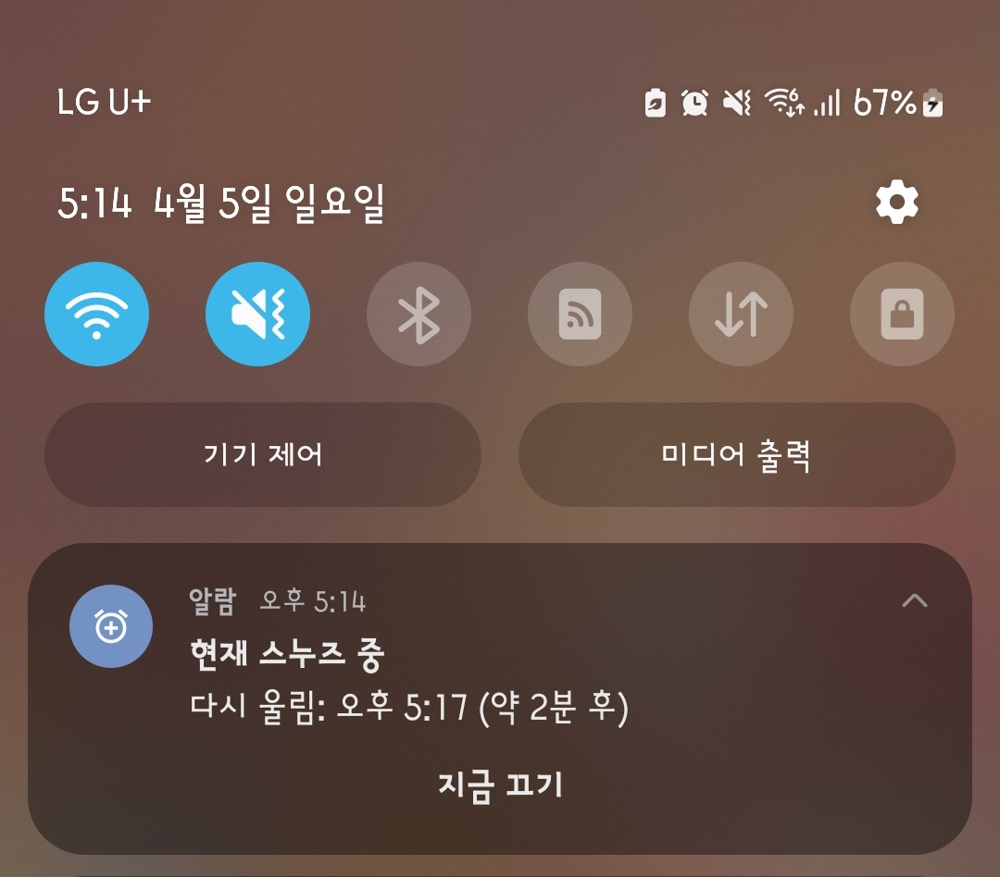
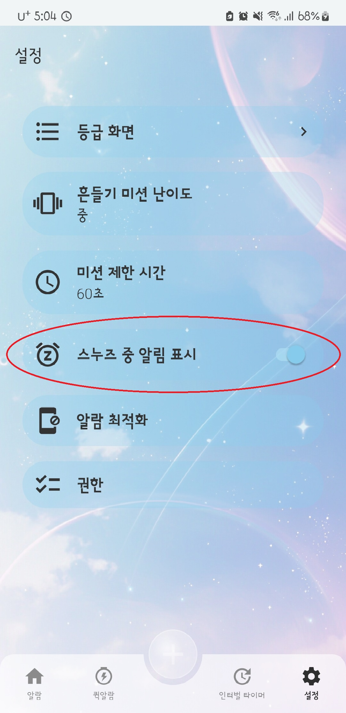
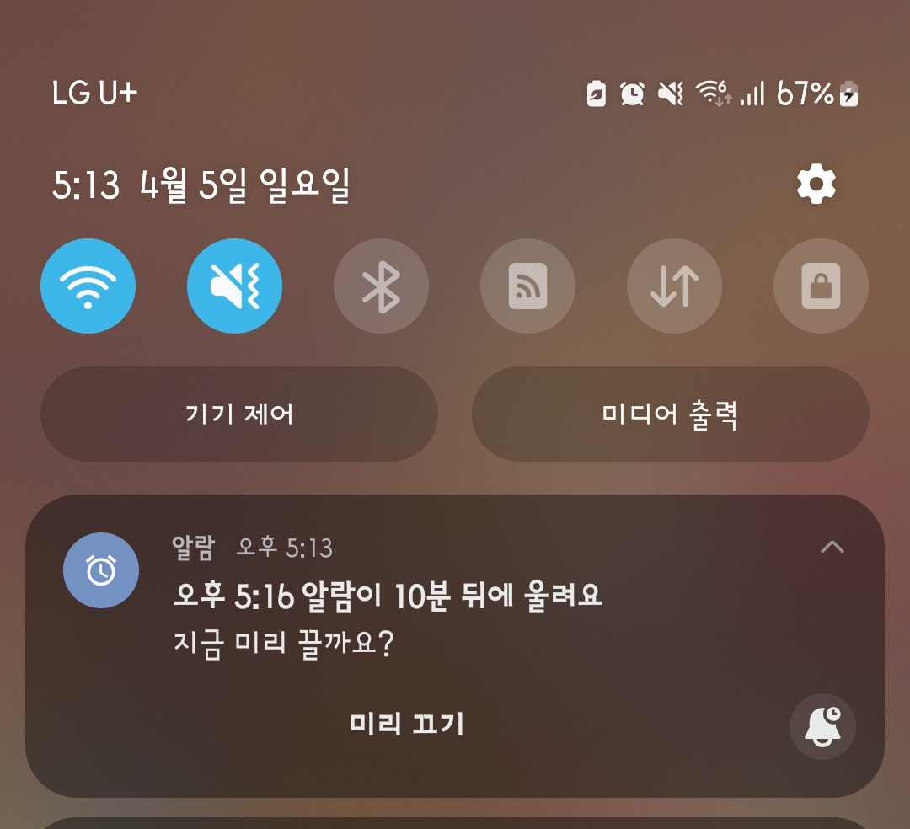

Using General Alarms
You can create alarms for your desired time and set repeat days, ringtone, vibration, volume, and other options.
How to Add an Alarm

- On the alarm screen, tap the + button at the bottom.
- Set the time you want.
- Select the days you want the alarm to repeat.
- Choose the ringtone, vibration option, and volume.
- If needed, set a mission, alarm message, and additional options.
- Save the alarm to add it to your list.
Snooze Notification
When you snooze an alarm, a notification will appear in the notification area.
From this notification, you can check the next ring time and the remaining time. You can also tap Dismiss Now to stop the alarm immediately.

While snoozing, you can check the status and dismiss the alarm from the notification.
You can turn the snooze notification on or off in the Settings screen.

You can enable or disable the snooze notification in Settings.
Pre-Alarm Notification
A pre-alarm notification may appear about 10 minutes before the alarm rings.
If you tap Dismiss Now, that alarm will be skipped only for that day.

Edit or Delete an Alarm
You can edit an alarm by selecting it from the list, or delete it by long-pressing it.
You can change the time, repeat days, mission, message, sound, and other settings at any time.
Please Note
If you set a repeating alarm, it will ring automatically on the selected days.